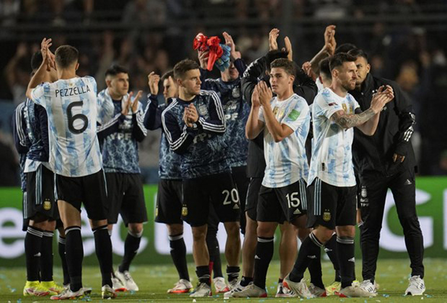

Sự kiện: Đội tuyển Argentina | World Cup 2022 | Messi chia tay Barca đến PSG
Siêu sao Lionel Messi cùng các đồng đội đã trải qua những giây phút đầy hài hước sau khi
trận "Siêu kinh
điển" Nam Mỹ khép lại.
VIDEO diễn biến trận Argentina - Brazil
Siêu sao Lionel Messi và các đồng đội tại ĐT Argentina đã thừa nhận họ không hề biết rằng liệu đội bóng
của mình
đã đủ điều kiện tham dự World Cup hay chưa. Sau khi cầm hoà đội đầu bảng Brazil
trong một trận cầu
không có bàn thắng nào được ghi, nhiều ngôi sao của Argentina đã đứng lại sân
để dò la thông tin về tấm vé đi
tiếp.
Sau khi giành 1 điểm trên sân nhà, Argentina đã có được 29 điểm sau 13 trận đấu và đang xếp thứ 2 sau đội
bóng đã chắc chắn giành vé vào VCK World Cup 2022 là Brazil. Trận đấu khép lại trong sự hồi hộp của Messi
cùng các đồng đội bởi không ai biết Argentina đã giành vé dự World Cup tại Qatar hay chưa.
"Tôi ăn mừng vừa đủ, chủ yếu là vì không khí trên sân. Đây là một trận đấu rất căng thẳng và tôi cảm thấy đây là
kết quả khá ổn. Tôi đã đứng rất lâu trên sân sau khi hiệp 2 khép lại và không biết số phận của chúng tôi như thế nào",
Messi thừa nhận.
"Điều quan trọng là chúng tôi đã không thua và tiếp tục có điểm. Hy vọng chúng tôi có thể vượt qua vòng loại và
tôi cần thông tin từ nhiều phía để xác nhận việc này", chân sút của PSG nói thêm.

ĐT Argentina vui mừng sau khi nắm chắc tấm vé dự World Cup vào năm sau
Ngay cả HLV trưởng Lionel Scaloni cũng đã phải hỏi một nhân viên thuộc Ban tổ chức rằng liệu đội bóng của
ông đã chính thức giành vé chưa. "Tôi không nắm được điều gì. Tôi chỉ được biết sau một khoảng thời gian khá
lâu. Tôi thực sự tự hào về đội bóng này", HLV Scaloni chia sẻ.
Sau khi trận "Siêu kinh điển" Nam Mỹ giữa Argentina và Brazil khép lại, Messi cùng đồng đội đã phải hỏi rất
nhiều người ngoài sân và biết được rằng họ cần chờ kết quả trận đấu diễn ra sau đó giữa Chile và Ecuado.
Chiến thắng bất ngờ của những vị khách Ecuador đã mang tới niềm vui khôn xiết cho Argentina khi Chile chính
thức bị đẩy xuống vị trí thứ 6, kém Argentina tới 13 điểm trong khi chỉ còn 4 vòng đấu nữa. Như vậy, Argentina
đã nối bước Brazil để trở thành đại diện tiếp theo của Nam Mỹ chính thức giành vé dự VCK World Cup tại Qatar
vào năm sau.